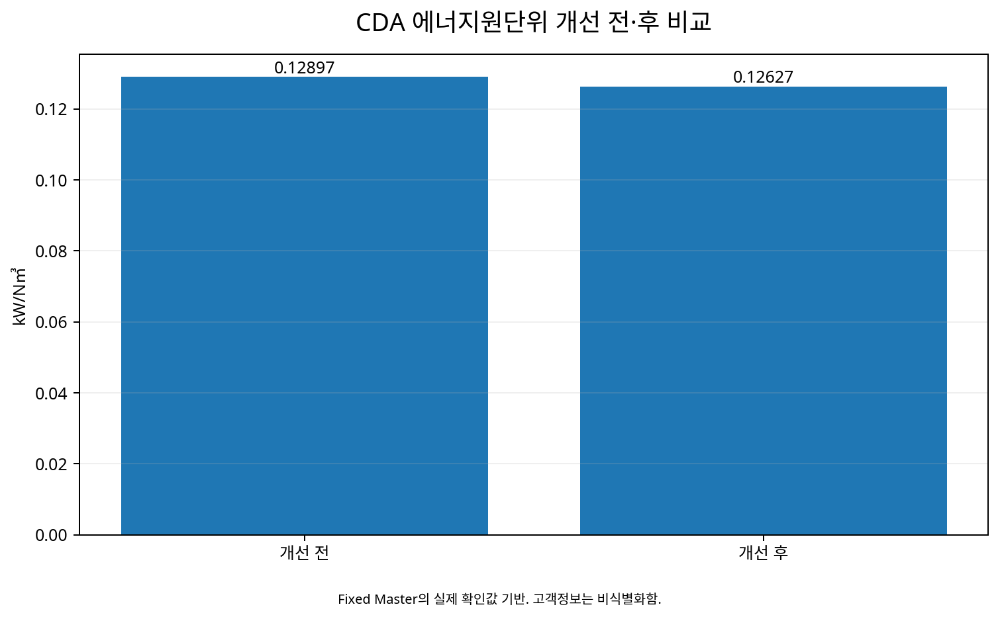

반도체·디스플레이 제조시설 Utility 운전최적화와
실시간 효율관리 체계 구축
단일 생산시설 Utility 분석에서 출발해 다공장 실시간 데이터 비교, 효율 KPI, 운전가이드와 최적화 실행으로 확장된 Experience-based Technical Case Study.
CDA냉동기보일러UPI/원단위5분 데이터1. 현장에서 무엇을 보았는가?
1차년도에는 단일 생산시설의 Utility 운전을 분석했고, 2차년도에는 국내 2개 생산거점 6개 공장으로 범위를 확대했다. 주요 대상은 CDA, 냉동기, 보일러였다. 제조시설의 Utility는 생산에 필요한 압축공기·냉수·열원을 안정적으로 공급해야 하므로 단순히 소비전력을 낮추는 방식으로 접근할 수 없다. 공급조건을 유지하면서 같은 Utility 서비스를 얼마나 적은 에너지로 만들 수 있는지가 중요했다. 이에 따라 단순 사용량보다 공장·설비별 운전효율과 부하특성을 비교하는 데 초점을 두었다.
2. 어떤 가설을 세웠는가?
동일한 Utility 수요를 만족시키더라도 어떤 설비를 우선 가동하고 몇 대를 운전하는지에 따라 에너지 투입량이 달라질 수 있다고 보았다. 복수의 공기압축기나 냉동기가 병렬로 구성된 시스템에서는 개별 설비의 정격효율만으로 전체 시스템 효율을 설명하기 어렵다. 생산부하 변화에 따라 설비의 기동·정지와 부하율이 달라지기 때문이다. 따라서 카탈로그 효율보다 실제 운전조건에서의 에너지 투입량과 Utility 생산량을 함께 비교하는 접근을 취했다.
3. 어떤 데이터를 확보했는가?
5분 주기의 실시간 데이터와 공장별 Utility DB를 활용하고, UPI·원단위·부하율·가동대수를 주요 판단지표로 사용했다. 월간 또는 일평균 사용량만으로는 설비의 기동·정지, 부하변화, 가동대수 전환과 같은 운전행동이 평균값 속에 가려질 수 있다. 5분 데이터는 Utility 수요 변화와 설비 운전상태를 보다 가까운 시간축에서 비교할 수 있게 했다. Trend, 상관관계, 공장 간 비교를 통해 단순 소비량 차이가 아니라 실제 운전 차이를 찾는 구조였다.
4. 분석은 어디로 연결됐는가?
분석의 목적은 Dashboard 자체가 아니라 현장 운전 의사결정이었다. 데이터가 축적되고 그래프가 만들어져도 운전자가 무엇을 바꿔야 하는지 알 수 없다면 실제 절감으로 이어지기 어렵다. 공장·설비별 효율 차이를 바탕으로 우선가동과 가동대수 등에 관한 운전가이드를 만들고 최적화 항목을 실제 적용하는 방향으로 연결했다. 즉 데이터 → 비교 → 판단 → 운전가이드 → 실행으로 이어지는 구조를 만든 것이다.
5. CDA Deep Dive
CDA 시스템 원단위는 0.12897 → 0.12627 kW/N㎥로 개선되었으며, 상대 변화는 약 2.09%이다. 퍼센트만 보면 변화가 작아 보일 수 있지만, 압축공기처럼 연간 공급량과 운전시간이 큰 Utility에서는 작은 원단위 차이도 누적되면 상당한 에너지비용 차이가 된다. 이 사례에서 중요한 점은 원단위 차이를 발견하는 데서 끝나지 않고 이를 어떤 설비를 우선 운전할 것인가라는 실제 운전규칙으로 연결했다는 것이다. 해당 CDA 우선운전 사례는 약 2.5억원/년의 절감 실적으로 정리되어 있다.
6. 성과를 어떻게 구분할 것인가?
11개 최적화 항목 적용에 따른 연간 16.2억원은 절감 실적으로, 추가 3개 항목의 연간 3.5억원은 추가 절감 가능성으로 구분한다. 이 구분은 홈페이지의 신뢰성을 위해 중요하다. 분석단계에서 발견한 잠재량과 실제 실행 후 확인된 성과는 같은 숫자처럼 보이더라도 Evidence의 성격이 다르기 때문이다. 따라서 약 19.7억원/년은 전체 개선 포트폴리오의 규모를 이해하기 위한 합계로만 사용하며, 전부를 실제성과로 표현하지 않는다.
7. 다른 현장에 적용하려면
Utility 총사용량만 보지 말고 서비스 산출량과 연결된 KPI를 정의해야 한다. 규모가 다른 공장을 총사용량만으로 비교하면 생산량이나 Utility 수요가 큰 공장이 불리해질 수 있기 때문이다. 계측 Boundary, 설비별 전력과 공통 보조동력 포함범위, 부하별 효율, 생산·품질·압력·온도 등 서비스 조건을 함께 확인해야 한다. 에너지가 줄었다고 해도 필요한 서비스 수준까지 낮아졌다면 동일 조건에서의 효율개선으로 보기 어렵다.
9. 정량 Evidence
| 구분 | 효과 | 공개 표현 |
|---|---|---|
| 적용된 최적화 | 16.2억원/년 | 절감 실적 |
| 추가 개선 후보 | 3.5억원/년 | 추가 절감 가능성 |
| Portfolio | 약 19.7억원/년 | 실적+잠재량 합계임을 명시 |
10. 컨설턴트의 판단을 다시 정리하면
이 사례의 출발점은 특정 설비를 교체하자는 결론이 아니었다. 먼저 실제 운전데이터를 통해 공장과 설비 사이에 효율 차이가 존재하는지를 확인하고, 그 차이를 만들어내는 운전조건을 찾는 것이 우선이었다. 그래서 총사용량보다 Utility 생산량과 연결된 UPI·원단위를 보고, 평균값보다 짧은 주기의 Trend를 보고, 개별 장비보다 가동대수와 우선가동 조합을 함께 보았다.
분석을 통해 효율 차이가 확인되면 그 다음 질문은 “이 차이를 현장 운전자가 반복해서 재현할 수 있는가?”였다. 여기서 분석결과가 운전가이드로 바뀐다. 결국 이 사례의 핵심은 데이터를 많이 모은 것이 아니라, 데이터를 이용해 더 나은 운전조건을 찾고 그것을 실제 운전규칙으로 연결한 데 있다.
FACT는 원자료와 확인된 정량 Evidence에 고정한다. Interpretation은 왜 그런 결과가 나타났는지를 기술적으로 설명한다. Application은 같은 사고방식을 다른 현장에 적용할 때 무엇을 확인해야 하는지 제시한다.
데이터와 분석 시각화

11. Evidence & Measurement Boundary
공개 홈페이지에서는 고객사명, 사업장명, 담당자, 내부 설비 ID 등 비공개 식별정보를 노출하지 않는다. 분석범위는 CDA·냉동기·보일러 등 주요 Utility와 공장별 운전데이터이며, 공개되는 정량성과는 Source에서 확인되는 성격에 따라 실제 적용성과와 추가 절감잠재량을 구분한다.
특히 연간 16.2억원은 11개 최적화 적용항목의 절감 실적으로, 연간 3.5억원은 추가 3개 항목의 절감 가능성으로 관리한다. 두 값을 합한 약 19.7억원/년은 전체 개선 포트폴리오를 설명할 때만 사용하며, 이를 모두 검증된 실제성과로 표현하지 않는다.
예상효과를 실제성과로 바꾸지 않는다. Simulation·제안·추정값은 해당 성격을 그대로 표시한다. 원자료에서 확인되지 않은 설비번호, 운전조건, 세부 수치는 생성하지 않는다.
12. 다른 현장에 적용하기 위한 실무 질문
| 확인 질문 | 왜 중요한가 |
|---|---|
| Utility 생산·공급량을 실제로 계측하고 있는가? | 총사용량이 아닌 효율 KPI를 만들기 위한 기본조건이다. |
| 원단위의 에너지 Boundary는 어디까지인가? | 주설비만 포함할지 펌프·냉각탑 등 공통 보조동력을 포함할지에 따라 KPI가 달라진다. |
| 부하가 달라질 때 설비별 효율은 어떻게 변하는가? | 정격효율이 높은 설비가 모든 부하구간에서 가장 효율적이라고 단정할 수 없다. |
| 현재 우선가동 순서는 무엇을 기준으로 정했는가? | 관행이나 설비번호가 아니라 실제 효율자료로 재검토할 여지가 있다. |
| 가동대수가 바뀌는 시점을 데이터에서 확인할 수 있는가? | 과잉 병렬운전이나 비효율적인 staging을 찾는 데 필요하다. |
| 절감 후에도 압력·온도·유량 등 서비스 수준이 유지되는가? | 생산조건을 훼손한 에너지 감소를 효율개선으로 오인하지 않기 위해서다. |